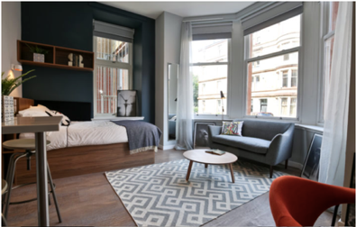
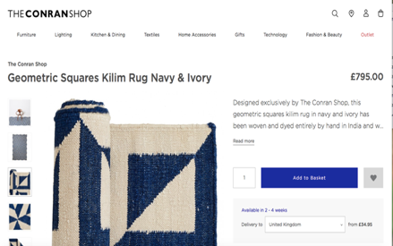

Article 3: Issues concerning student housing stock
The student housing market is reshaping by the wave of HE expansion, and the student experience is becoming commercialised following the last few decades (Mulhearn and Franco 2018).
The percentage of UK student tenure types have changed significantly in the last 10 academic years, referring to chart 1, especially in the private rented sector and the PBSA sector. Students now living in private let accommodation has decreased from a highest point in 2008/09. Figure 1 shows that by 2016/17 private let 10 years had decreased by approximately one third. However, it still make up the largest part of total market share. By contrast, the percentage of PBSA has increased by half over the same period. What stands out is that there is an 8% increase of people who stay at their own family home. The percentage of people choose university halls has kept the same again throughout the same period.
Private rented accommodation used to be the most widespread tenure type before PBSA. The decreasing number of students living in HMOs over the past 10 years show that there are some pressures on the stock of student housing.
There is no doubt that the prosperity of the student housing market depends on the number and demand of students. However, these factors would be changed by other unexpected elements such as the changing of policy. With the implementation of open‐door policy to higher education in the UK, an increase in the number of students who now chose to attend local universities and then live with their parents has shown an increase at 21% (see figure 1). In the mid‐1980s, this percentage was less than 10% (HEFCE , 2009). And besides, the increase of the tuition fees was also a factor for the increase in stay-at-home students. As figure 2 shows in 2018 Cardiff experienced the median rent fee of one room at £399 per month. A single person monthly costs is around £569.75 (Numbeo 2017). It means that a non-native student live in Cardiff for nine month (a whole term) will cost around £8712. It is approximately the same as the tuition fees (£9000) for full-time UK undergraduate students.

Liamo Davies, an English teacher based in Cardiff, said, “Because of the changing of the tuition fees, some student deterred to going back to the universities, and most of them chose going to the university in their home town, if there is a university in their cities, and live with parents in order to save the life expenditures, that would be cost efficient.”
Therefore, the private rent sector has lost a part of market from domestic students, and has to look toward international students. Previously, lower rental, nearby schools were traditionally seen as the competitive arena of the private sector student housing. However, with the changing structure in the student market, the requirements for quality accommodation now seems to be the case. As figure illustrate, despite price let having the major share the market, PBSAs are slowly becoming more and more competitive by offering such quality accommodation and better student experience.
On October 20th 2016, the Cardiff council has placed planning restrictions on HMO development by publishing Supplementary Planning Guidance in order to take action as a result of HMO student influences such as waste, increased noise and anti-social behaviour. It stated that no more than 20% of dwellings should be HMO’s within a 50 metre radius in Cathays and Plasnewydd. It was evidenced in 3.2 that of 96% HMOs available to let in Cardiff concentrated upon Cathays and Roath. And the majority of properties were accommodated by students and young professionals. Thereby, this policy has affected the development of the private sector to a large extent, and some landlords even might struggle economically under such planning restriction.
However, the restriction in HMOs seems to be catalyst for the explosion of the PBSA’s. it could be a hypothesised that students would be attracted to PBSAs because of the undersupply of shared-houses. Additionally, for developers, PBSA could bring them sustainable incomes and seems simpler and easier to manage compared to HMOs. With services such as: safety and security system, unified supplying and utilisation of water, heating and electricity, developers do not need to worry about every single house or room. More importantly, students tend to live in halls with self-catered accommodation, it has been proved by the drastic increase in students choosing to stay in private accommodation.
Even though the PBSA market grew fast, the market still is dominated by HMOs since most private halls are located by the city centre rather than by school facilities. Ross, works in the Residence Office of Cardiff University, explained that students generally prefer en-suite, self-catered accommodation but prefer to live closer to their school of study. Living close to the city centre seems to be a secondary consideration for students. Thereby, the developers try to improve the qualities of the infrastructure in order to offset the disadvantage of long-distance commutes to university.
Here's just a selection of PBSAs in Cardiff and the offers of each one compared to HMOs. As can be seen most PBSAs have perfect living facilities. However, it can be seen that the price is one third higher or even double than the traditional shared house, posing the question as to whether it is affordable for students.

Douglas Haig, the Vice Chairman and Director for Wales of the Residential Landlords Association (WRLA), has told Wales Online:
“Strong university cities like Cardiff provide a regular, consistent and highly reliable source of tenants. Good universities attract better quality tenants, especially overseas students, that are often (not always) wealthier as the higher fees they have to pay compare to local students will often rule out others coming to the UK in the first place.”
“They are also more likely to pay a premium for their rent for a hotel-style property and are more attracted to living alone or in small units as they tend not to know anyone when arriving in the country.”
Recently, the developers tend to build luxury student accommodation, most of them only supply studios or linked- studios, in order to attract students who come from overseas with high requirements on living experiences. Because this group usually bring huge disposable incomes and are able to afford the high price. Except the basic facilities, those building are usually equipped with quiet study rooms, games rooms, common rooms, gyms and even TV rooms.
Based on the higher standard of service and facilities, the price of studio probably is twice that of an en-suite, the average price reached £171 per week, the highest one reached £287 per week in Windsor House called “Conran Shop Executive Deluxe Studio”. Tenant in this room can enjoy the latest furnishings handpicked by Conran Shop, and furniture also with such high prices. It is incredibly that this type of room have been sold out in the early 2018/19 academic year.
 Last year, some students in Cardiff have got into financial trouble as they took out credit cards and loans in order to afford the “luxury” rooms.
Zhanjun Zhang, a student in Cardiff University Business School, who occupied one of PBSA in her first-year before opting for a four-bedroom shared house this year, but moved back to the PBSA in the summer period, believes much of the PBSA being offered is overplayed and underused, and the price was not worth the living experience.
"I lived in the PBSA when I first came to here because there was no way to find a shared house before coming to Cardiff, there are some agencies, but I couldn’t trust them. By contrast, most PBSAs in Cardiff do have their own website, and some of them have Chinese websites. it is really easy to find an accommodation to live in Cardiff with those websites.”
“The reason why I moved out the halls is because I think the rooms I lived in were not worth that money, there is no gym, no common room and other facilities but cost me £185 per week, even though it is a studio, but it is not that specious. Another reason is that I want to live with friends, I’m really bored when I come back after class, I need my own room, but I also need flatmates. ”
“I moved back to PBSA again in the summer period because I found that there are lots of problems in the shared-house during the last ten months. The housemate was friendly, but the agency was horrible. I would rather spend more money to live in a private hall. As I don’t need to worry with the bills and rents if shared-house mate delayed their rent.”
“The new dorm I’m living now is good. I have took over the contract from one of my friends, and he gave me a “friendship” discount for this room, only £100 per week. The price he offered is affordable for me, if you ask me whether I would move in with the original price, I would say no. even though this hall equipped with luxury level facilities, but I think except the laundry and gym, there were rarely people use that in often. And there is a 'cinema room' on the first floor in our building and I never once saw anybody in there.”
“The new dorm I’m living now is good. I have took over the contract from one of my friends, and he gave me a “friendship” discount for this room, only £100 per week. The price he offered is affordable for me, if you ask me whether I would move in with the original price, I would say no. even though this hall equipped with luxury level facilities, but I think except the laundry and gym, there were rarely people use that in often. And there is a 'cinema room' on the first floor in our building and I never once saw anybody in there.”
Returning to the statistics of the situation in Cardiff, student numbers are going down since 2014, especially when considering international students. If this trend continues for the next few academic years, the situation for Cardiff does not presently seem sustainable?
In 2016/17, there were more than 50 thousand full-time students enrolled in Cardiff. 45 thousand of them were undergraduates, this meant that in the summer period there might just have been five thousand people staying in Cardiff. However, there are more than 20 thousand PBSA rooms on services during period. Similarly, three quarter of PBSA at the potential of being “ghost – town”. Even though there are some postgraduate students trying to find a new home, they have got numerous choices available. In this case, some halls are far away from university or the city centre or with higher rentals fail to attract adequate attention from students to fill in the empty rooms.
Therefore, some developments cannot bear this market pressure and apply for their halls to be allowed to let to non-students. Livin Cardiff, a development on City Road, has applyed for a temporary shift until September 2018, because there are not enough students willing to take their rooms.
For other developments, while the student intake is lower than the volume of accommodation supply, this does back the question whether developers have the incentive to further invest in building new properties in Cardiff in the future.
Liberty Living responded: “We rent the rooms out on short term lets to students if we had any vacant rooms, ranging from a few weeks to a few months at a time or semester lets Sept-Dec, Jan–April etc.”
“We don’t at present, but the market sector changes all the time and properties get sold so you don’t know what opportunities may arise to purchase other properties.”
Cardiff University presented: “We would actively try and sell the empty accommodation to Cardiff University students. If we had vacancies in whole houses or blocks we may offer these to Cardiff University staff and conference guests.”
Beth John, Assurance Officer of Strategic Planning & Governance in Cardiff University, said, “The University regularly reviews its target student intake and related accommodation guarantees and allocation policy linked to its Residences Strategy and Estate Master Plan. The University does have provisional plans to add to its accommodations in the future and these will be progressed if / when student intake and accommodation guarantees warrant the development.”
However, Cardiff Council said: “The Planning Authority has noticed a reduction in the number of developers coming to discuss pre-planning for such large purpose built planning developments.”